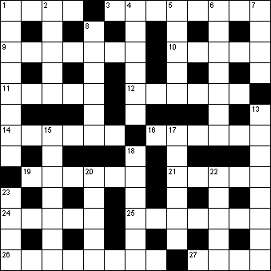

|
|
Daily Quick Crossword
26 May

|
Across 1 Formerly (4)3 Newspapers, collectively (3,5) 9 Breed of cat (7) 10 Gesture of doubt or indifference (5) 11 Slumber (5) 12 Dapper (6) 14 Slates (anag) (6) 16 Fast (6) 19 Agatha Christie detective (6) 21 Mountain ash (5) 24 Behave badly (3,2) 25 Very active (2,3,2) 26 Completed (8) 27 Landlord's income (4) |
Down 1 Contrary (8)2 Use bad language (5) 4 Fair-and-square (6) 5 Difficult question (5) 6 Otalgia (7) 7 Savant (4) 8 Uncomplicated (6) 13 Becoming extinct (5,3) 15 Abbreviate (7) 17 Equivalence (6) 18 In one's own house (2,4) 20 Strong thick cords (5) 22 A question of place? (5) 23 Abandoned child (4) |
|
Copyright © 2020 Simply Daily Puzzles
|